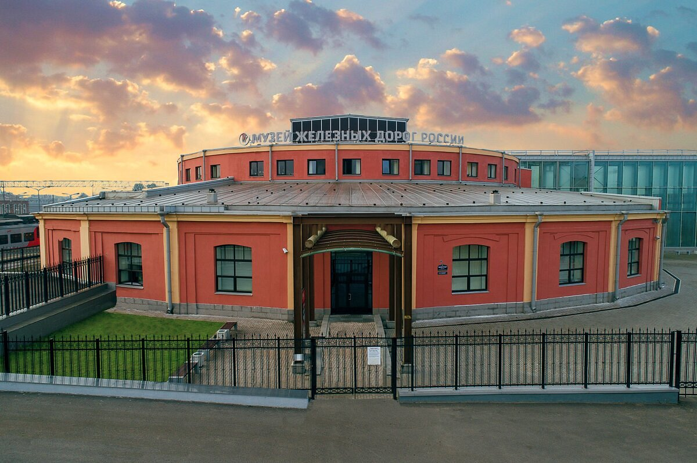

«Музей железных дорог России» — главный железнодорожный музей России
и один из крупнейших технических музеев мира. В музее представлены
коллекции редких и легендарных паровозов и тепловозов, электровозов,
вагонов и другой железнодорожной техники. Исторические артефакты
соседствуют с действующими моделями, интерактивными инсталляциями
и залами для временных выставок. В музее регулярно проводятся сборные
обзорные экскурсии, доступны для заказа две тематические экскурсии,
предполагающие посещение закрытых вагонов.